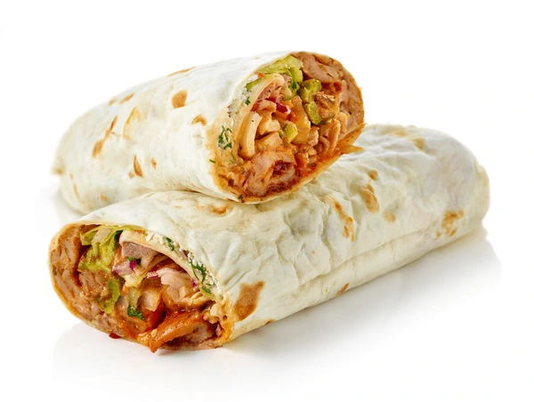

Durum Recipe

The Durum is a Turkish dish, like a shawarma that is very juicy and contains really good ingredients, like tomatoes and onions, topped off with some Turkish spices.
Ingredients
- Turkish-style tortilla
- Sauce (optional)
- Salad
- Onions
- Tomatoes
- Pickles
- Chips
- Chicken+Beef for the best taste
Steps
- Spread the tortilla on a flat surface;
- Add the vegetables;
- Add the sauce only if you wanted some;
- Add the chips;
- Add the meat, which needs to be cooked first;
- Put it in a grill toaster for a minute and a half
- Enjoy!